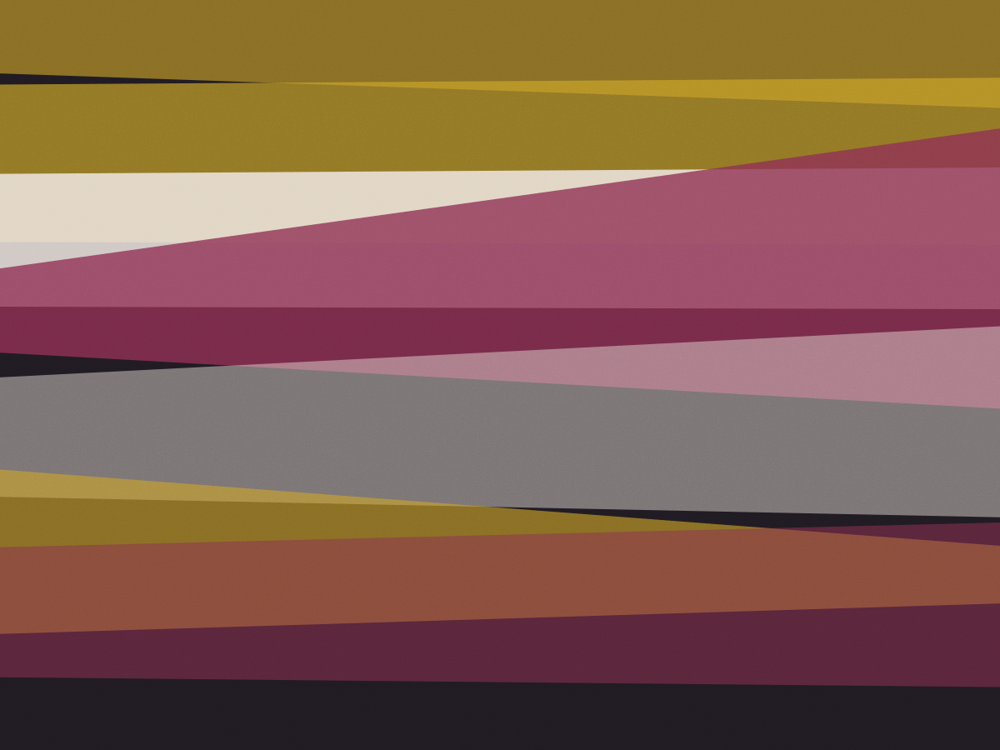
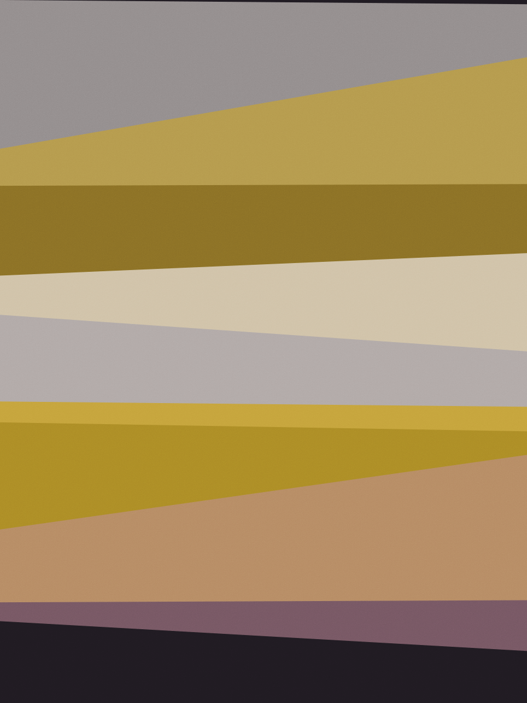
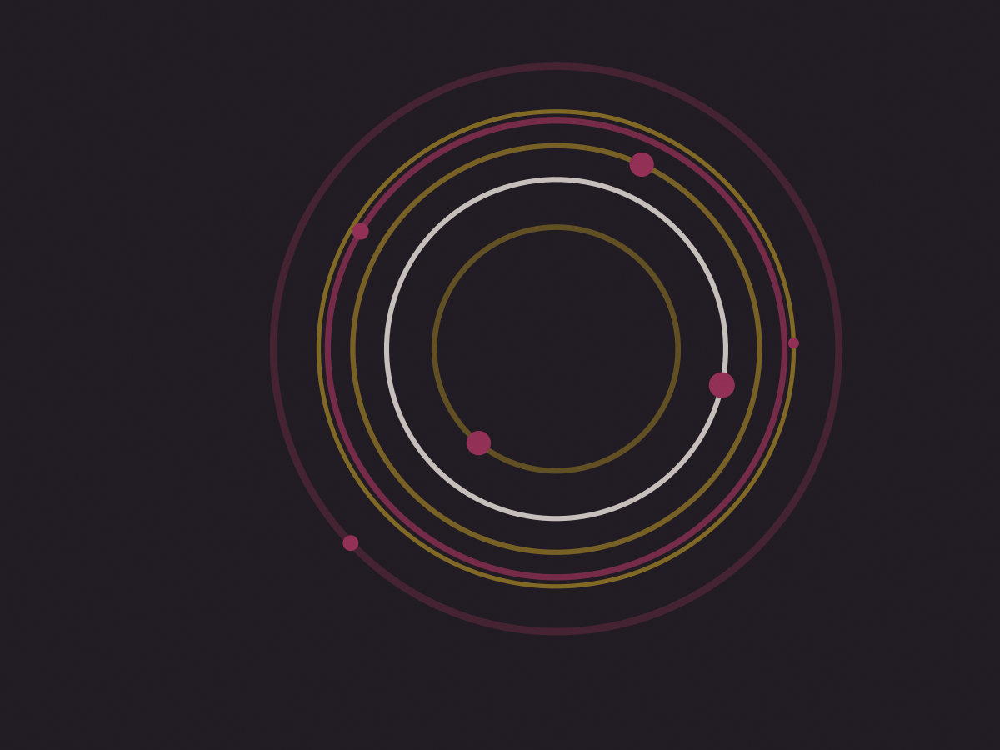
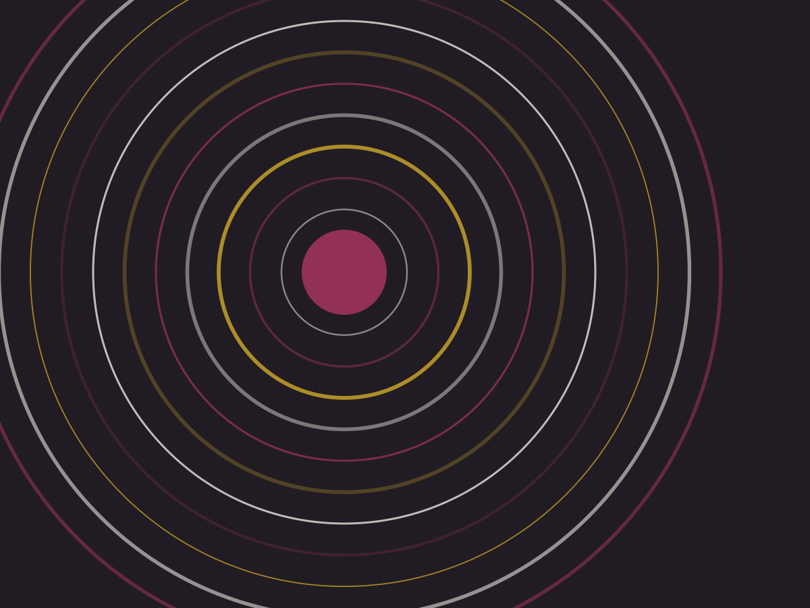
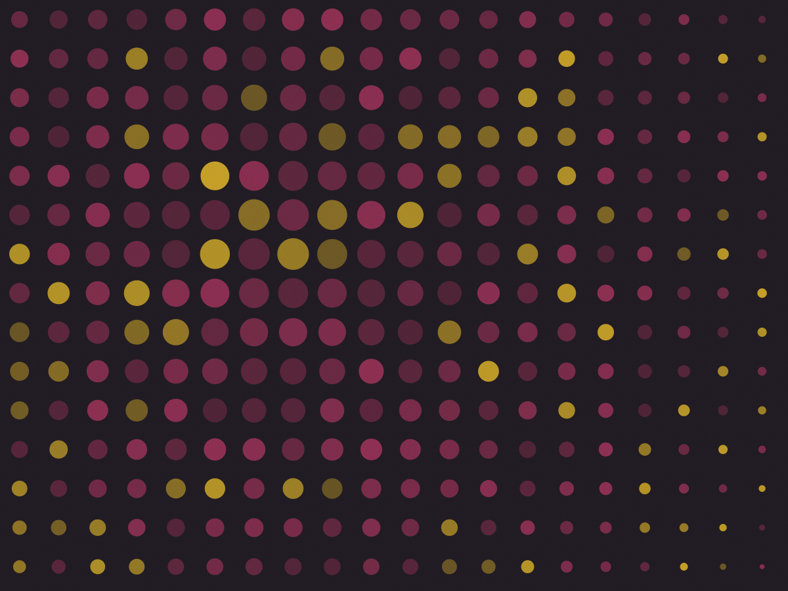

Adega e sala de degustação · Santa Maria
Vinho por taça com uva, região e safra
612 rótulos na prateleira e doze taças abertas por semana, cada uma com a ficha na mão: uva, região, safra e o prato que combina. Sommelier no salão de terça a sábado, das 17h às 22h.

"Não vendo rótulo caro. Vendo a taça que combina com o que você pediu de comer."
Ana Paula Ferraz · sommelier da casa
Curadoria
Como a carta é montada
Compramos de nove importadores e de duas vinícolas da Serra Gaúcha, sem atravessador. São 612 rótulos na prateleira e quarenta deles circulam pela carta por taça ao longo do ano, doze por semana.
No dia 4 de cada mês a equipe prova às cegas, em copo preto, os candidatos do mês seguinte. Entra o que passa em duas rodadas: primeiro sozinho, depois com o prato que a cozinha propõe. Rótulo que não combina com nada do menu não entra, mesmo com nota alta.
Cada taça sai com ficha impressa: uva, região, safra, teor alcoólico e o prato do menu que a casa indica. Se o cliente quiser outra coisa, o sommelier troca a taça na hora.
- Taça de 100 ml, servida da garrafa aberta na frente
- Ficha com uva, região, safra e dois pratos da casa
- Rolha de fora R$ 35 por garrafa, até duas por mesa
Toda quinta, 19h30
Cinco taças, quatro pratos, R$ 95
Quatorze lugares na mesa comprida, encostada na estante de tintos. O sommelier senta com a mesa e serve ele mesmo, taça por taça.
R$ 95 por pessoa · 14 lugares · reserva até quarta, 18h
| Quinta | Tema | Lugares |
|---|---|---|
| 07/11 | Douro: cinco tintos de uma margem só | 3 vagas |
| 14/11 | Etna e a uva Nerello Mascalese | esgotado |
| 21/11 | Brancos do Loire, de seco a doce | 6 vagas |
| 28/11 | Tannat uruguaio e carnes de panela | 9 vagas |
Carta por taça: doze rótulos, com uva e região
Atualizada toda segunda-feira. A mesma uva em garrafa fica na prateleira, com 15% de desconto para levar. Taça de 100 ml.
-
Tannat 2021
Rivera, Uruguai · vinícola de família
Tanino firme, ameixa madura e pimenta. Casa com a costela de panela da casa.
R$ 38 taça
-
Godello 2022
Valdeorras, Espanha · vinícola de família
Branco de textura, com casca de limão e amêndoa. Vai bem com a tábua de queijos da serra.
R$ 42 taça
-
Nerello Mascalese 2020
Etna, Itália · versante norte
Vermelho claro, cereja e cinza. Pedir com o polvo na brasa.
R$ 46 taça
-
Chenin Blanc 2023
Swartland, África do Sul
Maçã verde, mel e sal. É a taça de entrada, com o pão de fermentação natural.
R$ 36 taça
-
Touriga Nacional 2019
Dão, Portugal
Flor de violeta, amora e um fundo de cacau. Combina com o risoto de cogumelo.
R$ 40 taça
-
Riesling 2022
Mosel, Alemanha · Kabinett
Doce na ponta, ácido no meio. Serve com a torta de maçã e o queijo azul.
R$ 44 taça
-
Pinot Noir 2021
Willamette Valley, Estados Unidos
Cereja, cogumelo e terra molhada. Taça de meio da noite, com o sanduíche de porco.
R$ 52 taça
-
Fernão Pires 2023
Tejo, Portugal
Floral, leve, 11% de álcool. A taça de quem chega cedo e fica no balcão.
R$ 28 taça
Como se compra aqui
- Taça de 100 mloito rótulos por noite na lousaR$ 28 a R$ 52
- Garrafa para levar15% de desconto sobre a cartaR$ 96 a R$ 690
- Harmonização de quintacinco taças e quatro pratosR$ 95
- Assinatura dois por mêsduas garrafas escolhidas pelo sommelierR$ 240 / mês
- Tábua de queijos da serraquatro queijos, pão e geleia de figoR$ 58
"Seiscentas garrafas e ninguém para explicar a diferença entre uma e outra é só uma loja. Aqui tem gente na mesa."
Rui Camargo · brancos e espumantes
Reserva de mesa
Seis mesas de dois e quatro lugares, mais a mesa comprida de quatorze nas quintas. O balcão tem oito bancos e não reserva.
Onde fica
Rua Almirante Marques Leão, 214
Porta verde entre a padaria e a oficina, 400 m da praça central de Santa Maria. Não tem estacionamento próprio; as vagas da rua viram rotativo às 18h.
- Terça a quinta
- 17h – 23h
- Sexta
- 17h – 1h
- Sábado
- 12h – 1h
- Domingo e segunda
- fechado




Adega climatizada a 16 °C · 34 lugares no salão · 8 no balcão